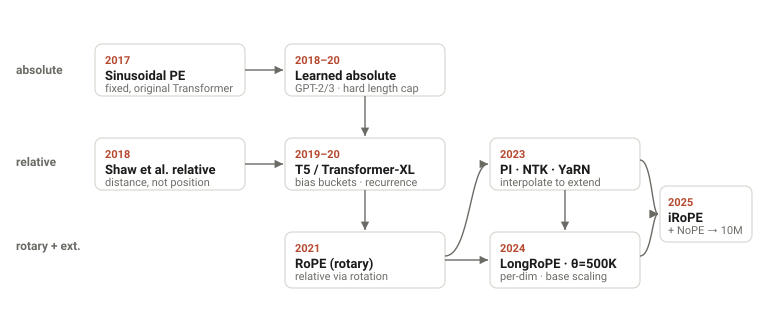

The path to 1M context window
Table of Contents
On positional encoding, the KV cache, attention, and everything else that had to change to read a million tokens.
Sometime in the last two years, the million-token context window stopped being a headline and became the spec sheet. Google's Gemini 1.5 got there first in early 2024; since then OpenAI's GPT-4.1, Anthropic's Claude 4, Alibaba's Qwen, Meta's Llama 4, and DeepSeek V4 have all shipped 1M-token windows — and increasingly they hold up across the whole million rather than falling apart in the middle. A million tokens is now the floor a frontier model is expected to clear, with 2M, 4M, even 10M already in preview. So the open question isn't whether the next model will take a million tokens — that's becoming the default. It's how.
That's a ~5,000× jump from GPT-3's 2,048 tokens in 2020, and it didn't come from one trick. This is a tour of what actually changed — across positional encoding, the KV cache, attention, architecture, training, and the systems that hold it all together.

It is tempting to think of "context length" as a single setting someone turned up. It isn't. A long context stresses six different parts of a language model at once, and each one had to be re-engineered:
- Positional encoding — how the model knows where a token sits had a hard ceiling built in.
- The KV cache — memory that grows linearly with every token you keep around.
- The attention algorithm — compute and memory that grow with the square of the sequence.
- The architecture — whether you even use full attention at all.
- The training recipe — you can't just test on long inputs; you have to train on them.
- Systems & optimization — fitting a million-token sequence across many GPUs without diverging.
Let's walk the stack.
Why Length Is Expensive: Attention Scales as N², Memory as N
Two costs make long context expensive, and they scale differently. Attention is O(N²): every token attends to every other, so going from 2K to 1M tokens makes the score matrix ~250,000× bigger — for years simply impossible to train. The KV cache (the keys and values a model holds for every prior token) grows only linearly, but the constant is brutal: Llama 3 70B needs ~40 GB at 128K tokens, on top of ~140 GB of weights.refs

These two costs are why long context is expensive — but they aren't the whole story. Cheaper attention and a smaller cache are necessary, and a couple of the sections below attack them head-on; the rest add the other pieces — starting with the one that came first, a hard ceiling on length itself.
Positional Encoding: RoPE for Local Order, NoPE for Long-Range Reach
Self-attention is permutation-invariant — without help, it can't tell "dog bites man" from "man bites dog." The original 2017 Transformer injected order with fixed sinusoidal encodings.refs But GPT-2 and GPT-3 switched to learned absolute positional embeddings: a lookup table with one trainable vector per position, 0 to L−1. (A common misconception is that GPT-3 used sinusoidal encodings; it did not — it used the learned table, capped at L=2,048.)
That table is exactly the problem. If you only ever train positions 0–2047, position 2048 has no vector at all. The model can't process a longer sequence without retraining. Absolute position embeddings build a wall at the training length.
The escape was to encode relative distance instead of absolute position — Shaw et al. (2018) added learned relative offsets to attention; Transformer-XL and T5 refined the idea with bias terms and log-spaced buckets.refs Because these encode "how far apart," not "where exactly," the model never meets a completely unseen position.
The decisive move was RoPE (Rotary Position Embedding, 2021): instead of adding a position vector, it rotates each query and key by an angle proportional to its position, so the score between them depends only on their relative distance (m−n). It's parameter-free and now nearly universal — LLaMA, Mistral, Qwen, DeepSeek, and Gemma all use it.refs
But RoPE has two properties that are helpful up close and become liabilities at range. First, a built-in long-term decay: the rotation makes the query–key score fall off as tokens get farther apart — great for local word order, bad when you need to retrieve a fact a million tokens back. Second, its rotation frequencies are effectively calibrated to the training length: feed it positions far beyond what it saw and those angles are out-of-distribution, and attention falls apart. RoPE is both anchored to where it trained and biased toward the neighborhood — exactly the two things that hurt at a million tokens.

Pushing the anchor out: PI, NTK, YaRN
The first wave of fixes attacks the training-length anchor — stretching RoPE's usable range with a brief continued-pretraining pass instead of retraining from scratch:
- Position Interpolation (PI, 2023) squeezes position indices back into the trained range; ~600× more stable than extrapolating, it extended LLaMA to 32K in under 1,000 steps.refs
- NTK-aware scaling / ABF raise the RoPE base (e.g. 10,000 → 500,000), lengthening the low-frequency cycles; Llama 3 used base 500,000 to reach 128K.
- YaRN (2023) blends interpolation across frequency bands with a temperature correction — same quality, ~10× fewer tokens. It's the workhorse: DeepSeek and Qwen extend to 128K–1M with it.refs
But these only move the anchor — they don't touch the decay. A RoPE model stretched to 1M still struggles to attend uniformly across it.
The frontier move: drop position on some layers (NoPE)
The newest idea is almost embarrassingly simple: on a fraction of the layers, use no positional encoding at all (NoPE) and let them read order from the causal mask alone. A NoPE layer has no rotation, so it has neither problem — no distance decay (it can attend across the whole sequence) and no training-length anchor (nothing goes out-of-distribution as the context grows). Keep RoPE on most layers for sharp local order; let the position-free layers do the long-range reaching.refs
This is what the longest-context models actually do. Meta's Llama 4 calls it iRoPE: roughly three RoPE layers to every one NoPE layer, plus inference-time attention-temperature scaling — trained at 256K, it generalizes to 10M tokens. Hugging Face's fully-open SmolLM3 (3B) uses the same recipe — RoPE on three-quarters of layers, NoPE on every fourth — with the RoPE base raised to 5M and YaRN to reach 128K. Because SmolLM3 ships its weights and its training recipe, it's the clearest public confirmation of the pattern; the proprietary 1M models (Gemini, GPT-4.1, Claude) don't disclose their positional scheme, but are widely assumed to do something similar.refs
So the modern answer to "how do you encode position for a million tokens?" is: keep it where it helps, drop it where it hurts. Position pins down local word order, so keep it on most layers; remove it on the layers that have to see the whole document, and the model finally reaches as far as its context window claims to.
The KV Cache: Shrink the Memory That Length Multiplies
Even with positions solved, the KV cache is the memory bottleneck at inference. The fix was to stop giving every attention head its own keys and values.
- Multi-Head Attention (MHA) — the GPT-3 baseline. Every head caches its own K and V.
- Multi-Query Attention (MQA, 2019) — all query heads share one K/V head. With 128 heads, that's a 128× smaller cache, at some quality cost.refs
- Grouped-Query Attention (GQA, 2023) — the pragmatic middle ground: split heads into G groups that each share K/V. With 8 groups you get an 8–16× reduction and keep almost all of MHA's quality. An existing MHA checkpoint can be "uptrained" to GQA with ~5% of original compute. Llama 2/3, Mistral, and most open models use it.refs
- Multi-head Latent Attention (MLA, 2024) — DeepSeek's approach: instead of fewer heads, compress K and V into a low-rank latent vector (plus a small decoupled RoPE component), and cache only that. DeepSeek reported a 93.3% KV-cache reduction and 5.76× higher throughput.refs

Attention: Getting Out From Under the O(N²) Wall
Reducing the cache helps inference memory, but training still has to compute attention. Two strategies emerged: make the exact computation IO-efficient, or make it sparse.
FlashAttention (2022) is the single most important piece of plumbing here. It computes exact attention without ever writing the N×N matrix to high-bandwidth memory — it tiles Q, K, V into SRAM-sized blocks and keeps a running softmax. The activation memory drops from O(N²) to O(N), and HBM traffic falls by roughly 9× in practice (the often-quoted "O(N²)→O(N)" is a simplification; the precise bound is O(N²d²/M)). FlashAttention-2 and -3 pushed hardware utilization from ~25% to 75% on A100/H100.refs Almost every model since 2023 trains on it.
The sparse lineage attacks the exponent directly. Sparse Transformers (2019) cut O(N²) to O(N√N); Longformer and BigBird (2020) used sliding-window + global tokens to reach O(N).refs Mistral 7B (2023) shipped sliding-window attention with a rolling KV buffer as a headline feature. StreamingLLM (2023) made a lovely observation: models dump excess attention onto the first few "sink" tokens, so if you keep those 4 sink tokens plus a recent window, you can generate indefinitely at fixed memory. DeepSeek's Native Sparse Attention (2025) makes sparsity trainable end-to-end, combining compressed, selected, and local-window paths for ~11× faster decoding at 64K.
Do You Even Need Attention?
If attention is inherently quadratic, why not replace it? State-space models (SSMs) compress the entire past into a fixed-size state, giving O(N) time and O(1) inference memory — like an RNN that can be trained in parallel.
The line runs from HiPPO and S4 (which first cracked the 16K-token Long Range Arena tasks where Transformers scored near chance) through Mamba (2023), whose selective mechanism lets the state decide what to keep. A Mamba-3B matched Transformers twice its size on perplexity and ran ~5× faster at long sequences.refs Mamba-2 then proved a formal duality between SSMs and attention, unifying the two families.
The catch: pure SSMs are weaker at precise recall — looking up an exact token far back (Mamba's multi-query associative recall accuracy collapses where attention stays near 100%). So the winning designs are hybrids. Jamba (2024) interleaves one attention layer per seven Mamba layers plus MoE, fitting a 256K context in 4 GB of KV cache versus 32 GB for a comparable Transformer. Samba pairs Mamba with sliding-window attention and extrapolates to 256K. The attention layers handle exact retrieval; the SSM layers handle cheap long-range compression.
Capability Isn’t Enough — You Have to Train on Long Sequences
None of the above matters if you only ever train on short sequences. But training everything at 128K would be absurdly expensive (that quadratic cost again). The industry converged on a multi-stage curriculum: do the vast bulk of pretraining at a short length where attention is cheap, then a short, data-engineered long-context phase.
Llama 3 is the canonical example: ~15T tokens at 8K, then ~800B tokens ramping through six stages from 8K to 128K, with the RoPE base raised to 500,000. Each stage advanced only once two criteria were met — short-context benchmarks recovered and needle-in-a-haystack recall hit ~100% at the new length.refs DeepSeek-V3 did the same with two 1,000-step YaRN phases (4K→32K→128K) on top of 14.8T tokens of 4K pretraining — 128K context for the cost of 2,000 extra steps.
The data details turned out to matter as much as the length:
- Document packing with intra-document masking — pack many short docs into one long sequence for efficiency, but mask attention so tokens only see their own document.
- Long-data upsampling — code repositories and books carry genuine long-range dependencies; Princeton's ProLong showed that the right data mix, trained on just 40B tokens, beat Llama-3.1-8B-Instruct's ~800B-token long-context training on the HELMET benchmark.
- Synthetic long-range tasks — fill-in-the-middle, key/passage retrieval, and paragraph reordering inject the long-distance structure that natural text often lacks (Qwen2.5-1M).
When the Sequence Is Too Big for One GPU
A million-token sequence doesn't fit on one device, so the sequence itself gets sharded. Context (sequence) parallelism splits the sequence across GPUs; Llama 3 used CP=16 so each rank handled an 8K slice of a 128K sequence. The elegant version is Ring Attention (2023): arrange devices in a ring, stream KV blocks around it, and overlap that communication with computation so it's effectively free. It scales context linearly with device count — demonstrated at 256K tokens on 8× A100 and millions of tokens on larger pods, and is the lineage behind Gemini 1.5's million-token training.refs
On the inference side, PagedAttention (vLLM, 2023) borrowed virtual-memory paging from operating systems: store the KV cache in non-contiguous blocks via a page table, cutting memory waste from 60–80% to under 4% and letting one server hold far longer contexts or larger batches.refs Together with FP8 KV quantization, this is what makes long context economical to serve, not just train.
Why Long Training Runs Blow Up
Longer sequences and bigger models make training more fragile, and a single loss spike at 128K can corrupt a very expensive run. The stability toolkit grew accordingly — much of it invisible in model cards but essential:
- Pre-LN + AdamW — moving LayerNorm inside the residual branch and decoupling weight decay (AdamW) were the early enablers of stable deep training; both are near-universal.refs
- Schedules — GPT-3-era linear-warmup + cosine decay gave way to Warmup-Stable-Decay (WSD), which is "horizon-free": you can trigger the decay at any point, which is perfect for bolting a long-context phase onto a finished base model.
- z-loss & QK-norm — a tiny penalty on the softmax normalizer (z-loss) and normalizing queries/keys before attention (QK-norm) both prevent logit explosion. QK-norm matters more at long context, where one collapsed attention distribution loses information across the whole sequence.
- muP / MetaP — parametrizations that keep optimal hyperparameters stable as you scale width, so you tune on a small proxy and transfer to the big model without re-tuning at each stage.
- Muon — a newer optimizer that orthogonalizes gradient updates, reported at ~2× the compute efficiency of AdamW and adopted (as MuonClip, with spectral-norm clipping for attention stability) in trillion-parameter models like Kimi K2.
A Long Window Is Useless If the Model Ignores the Middle
A model can have a 1M-token window and still ignore most of it. Two findings drove the field here. "Lost in the Middle" (2023) showed a U-shaped curve: models reliably use information at the start and end of the context but miss things in the middle, dropping >30 points on multi-document QA.refs And Anthropic found that Claude 2.1 scored just 27% on needle retrieval until a one-line prompt nudge raised it to 98% — long-context ability can be suppressed by post-training, not just enabled by it.
Evaluation matured past perplexity into targeted probes: Needle-in-a-Haystack (find a planted fact), RULER (synthetic tasks at controlled lengths that expose a model's effective context, usually well below its advertised one), LongBench, and InfiniteBench. These benchmarks became training targets — Llama 3 literally gated each context-extension stage on near-perfect NIAH recall. The frontier claim today is Gemini 1.5's >99.7% recall at 1M tokens and GPT-4.1's 100% NIAH retrieval to 1M.
The Modern 1M Recipe, Assembled
Put it all together and a 2026-era long-context model looks roughly like this:
| Layer | GPT-3 (2020) | 1M-context model (2025–26) |
|---|---|---|
| Positional encoding | Learned absolute (cap 2,048) | RoPE + YaRN/LongRoPE, or iRoPE+NoPE |
| Attention heads | Full MHA | GQA or MLA (+ KV quantization) |
| Attention algorithm | Dense O(N²) | FlashAttention-3, sliding window, sinks, sparse |
| Architecture | Dense Transformer | MoE, sometimes SSM hybrids |
| Training | Single length, 2K | Multi-stage curriculum to 128K–256K + synthetic data |
| Systems | Data parallel | + Context parallel / ring attention, paged KV |
| Optimizer | Adam + cosine | AdamW/Muon + WSD, z-loss, QK-norm, muP |
| Evaluation | Perplexity | NIAH, RULER, LongBench gating each stage |
No single breakthrough took us from 2K to 10M. RoPE removed the hard ceiling; FlashAttention made the quadratic survivable; GQA and MLA shrank the cache; the multi-stage recipe taught models to actually use the length; and ring attention spread it across the cluster. The "1M context window" on a spec sheet is the visible tip of five years of work spread across the entire stack — and the same logic that got us here (cheaper attention, smaller caches, better length generalization) is what will push the next jump, whether that's 100M tokens of attention or something that isn't attention at all.
References & Further Reading
- Vaswani et al., Attention Is All You Need (2017).
- Brown et al., Language Models are Few-Shot Learners (GPT-3) (2020).
- Shaw et al., Self-Attention with Relative Position Representations (2018); Dai et al., Transformer-XL (2019); Raffel et al., T5 (2020).
- Su et al., RoFormer: Rotary Position Embedding (2021); Press et al., ALiBi (2021); Kazemnejad et al., The Impact of Positional Encoding on Length Generalization (NoPE) (2023); Yang et al., RoPE to NoPE and Back Again: A New Hybrid Attention Strategy (2025).
- Meta, Llama 4 (iRoPE) (2025); Hugging Face, SmolLM3 (2025) — fully-open RoPE+NoPE long-context recipe.
- Chen et al., Extending Context Window via Positional Interpolation (2023); Peng et al., YaRN (2023, ICLR 2024); Ding et al., LongRoPE (2024); Xiong et al., Effective Long-Context Scaling (ABF) (2023).
- Shazeer, Fast Transformer Decoding (MQA) (2019); Ainslie et al., GQA (2023); DeepSeek-AI, DeepSeek-V2 (MLA) (2024) and DeepSeek-V3 (2024).
- Dao et al., FlashAttention (2022), FlashAttention-2 (2023); Shah et al., FlashAttention-3 (2024).
- Child et al., Sparse Transformers (2019); Beltagy et al., Longformer (2020); Zaheer et al., BigBird (2020); Xiao et al., StreamingLLM (2023); Jiang et al., Mistral 7B (2023); DeepSeek-AI, Native Sparse Attention (2025).
- Gu et al., S4 (2021); Gu & Dao, Mamba (2023); Dao & Gu, Mamba-2 / SSD (2024); Lieber et al., Jamba (2024); Ren et al., Samba (2024).
- Dubey et al., The Llama 3 Herd of Models (2024); Gao et al., ProLong (2024); Qwen Team, Qwen2.5-1M (2025).
- Liu et al., Ring Attention (2023); Korthikanti et al., Reducing Activation Recomputation (Sequence Parallelism) (2022); Kwon et al., PagedAttention / vLLM (2023).
- Loshchilov & Hutter, AdamW (2017); Yang et al., Tensor Programs V (muP) (2022); Hu et al., MiniCPM (WSD) (2024).
- Liu et al., Lost in the Middle (2023); Hsieh et al., RULER (2024); Bai et al., LongBench (2023); Gemini Team, Gemini 1.5 (2024).